Desenvolvedor Front-end em formação, construindo interfaces com HTML, CSS, JavaScript e React.
HTML, CSS, JavaScript e React. Também estudando Python, SQL e Git/GitHub na faculdade de ADS.
Inglês avançado (WiseUp).
Branding, identidade visual e social media.
Ensaios, paisagens e edição de imagens.
Educandário Eurípedes Barsanulfo — produção de eventos e multimídia, agente de portaria, auxiliar de secretaria e auxiliar administrativo.
Ensaios fotográficos de gestante, festas infantis, natureza e modelos.
Formado pelo Centro Universitário IESB.
CONAB / Brasília Shopping — gerenciamento de crises, tomada de decisão rápida sob pressão, atendimento ao público e primeiros socorros.
Gran Faculdade — conclusão prevista.
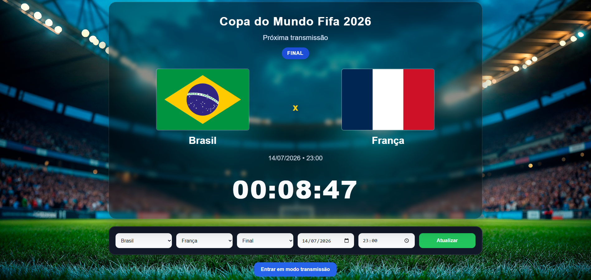
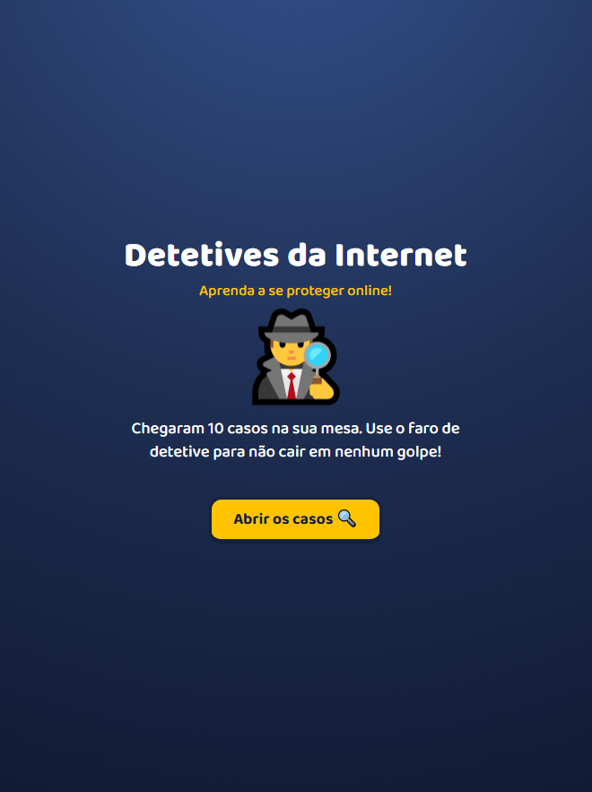
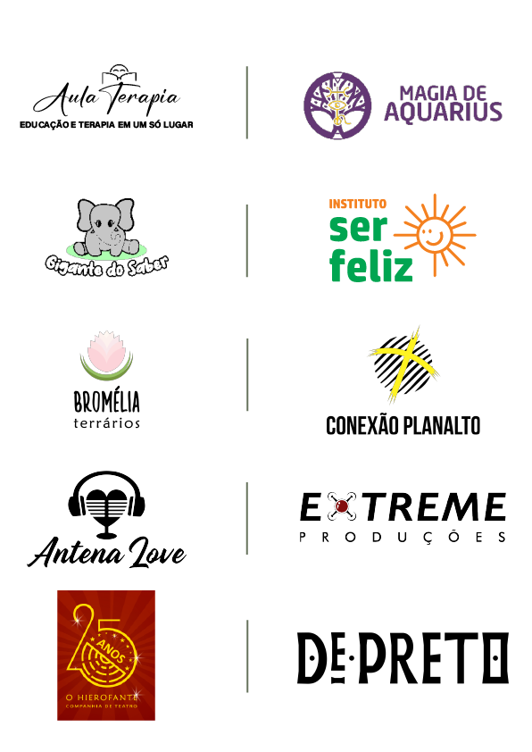
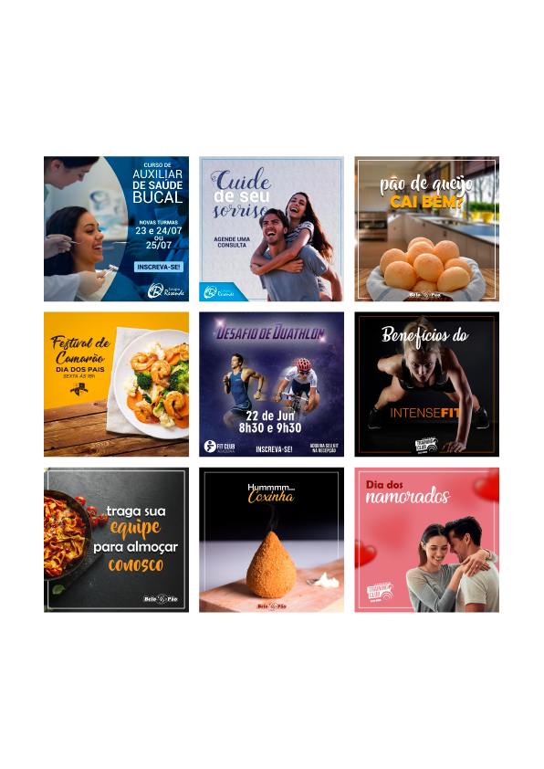
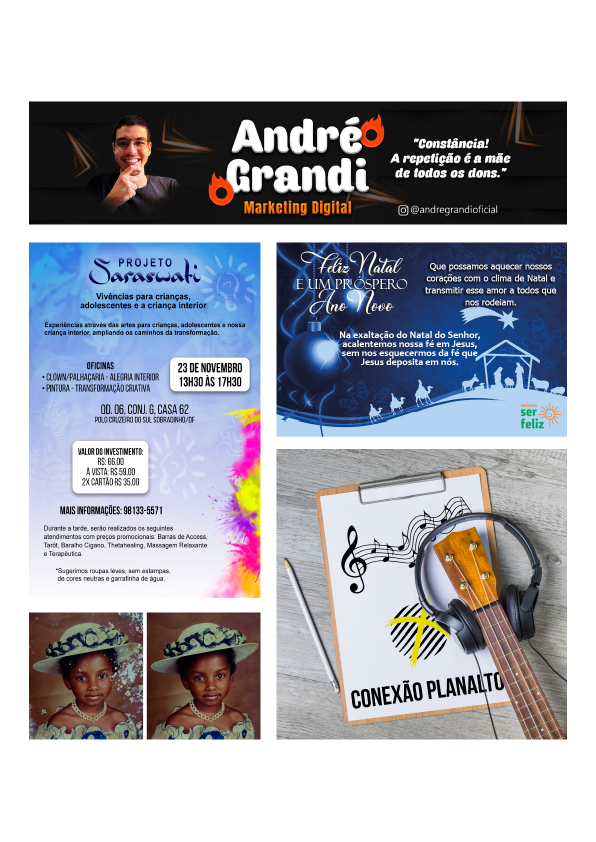
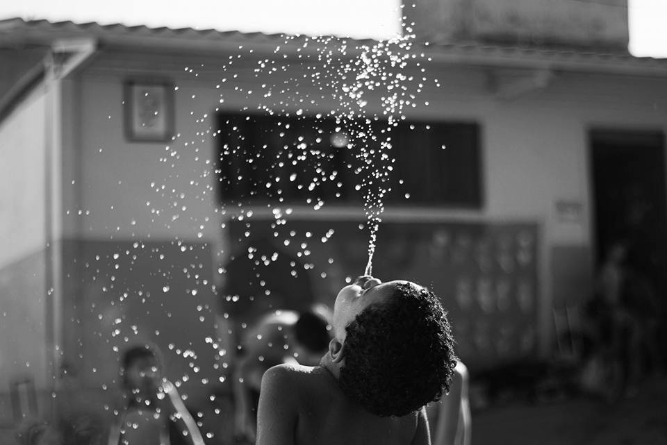
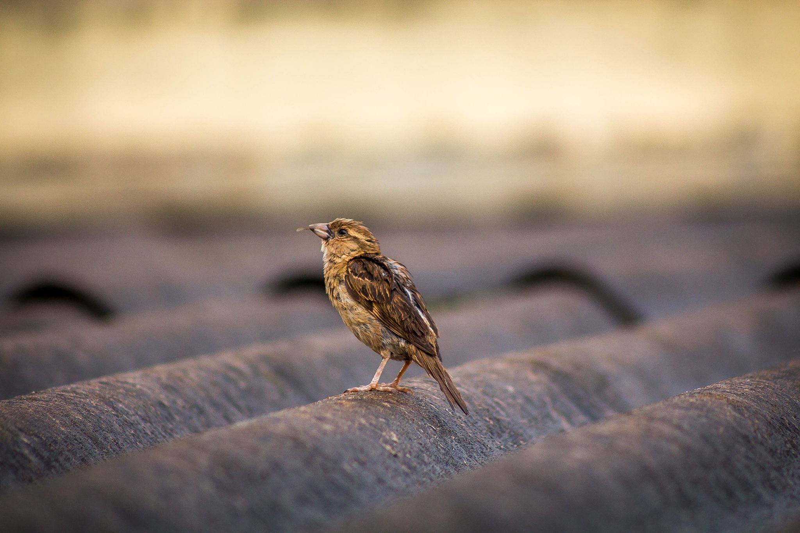
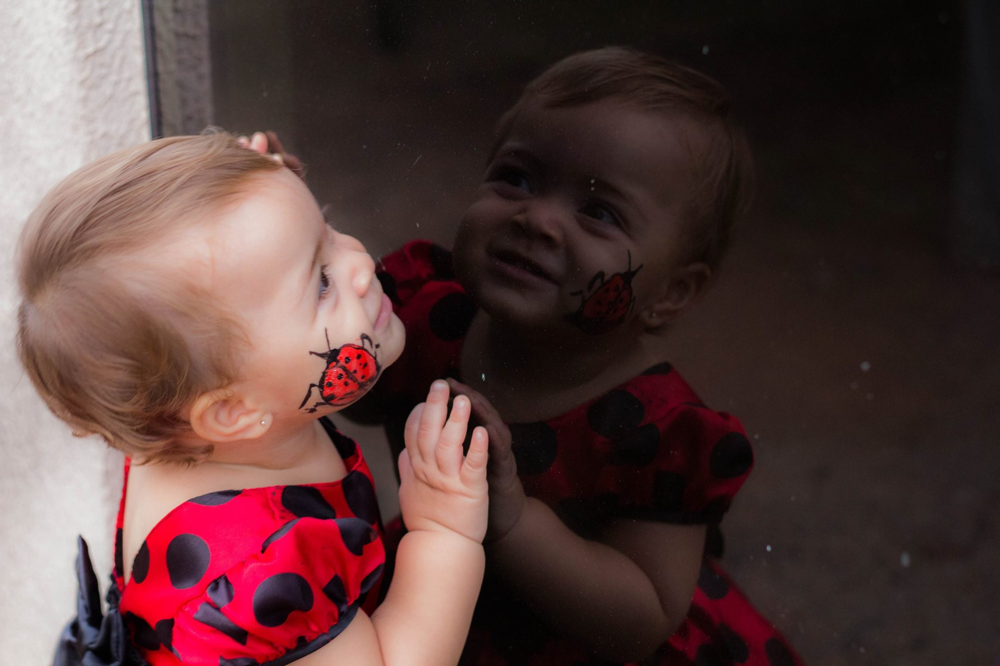
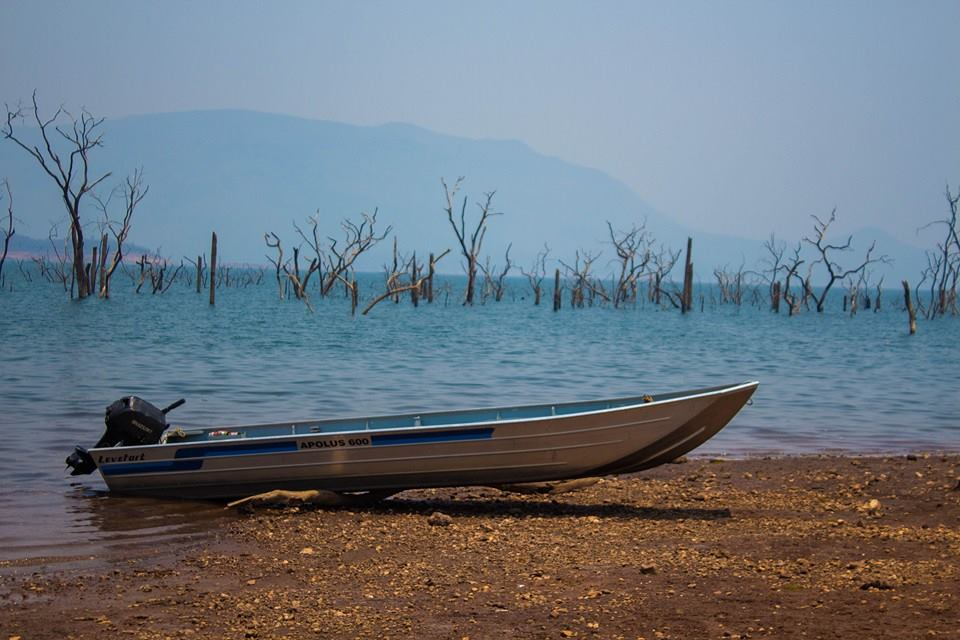
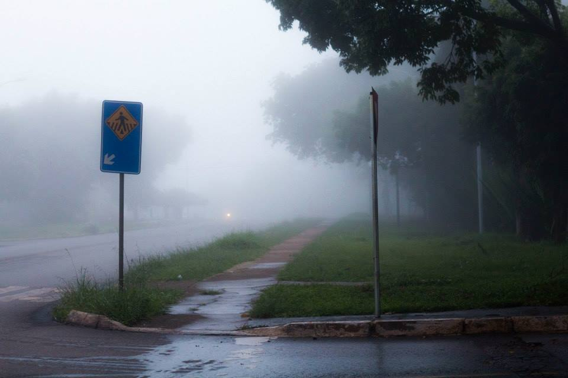
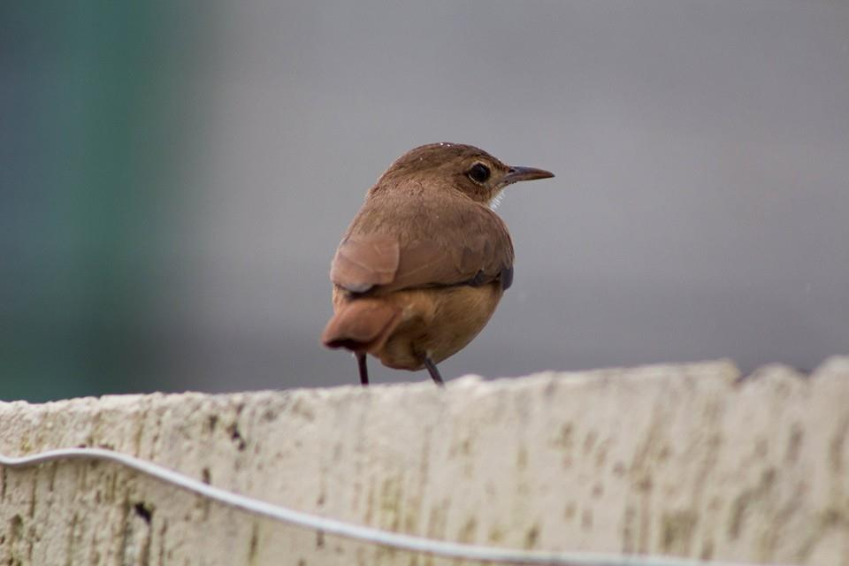
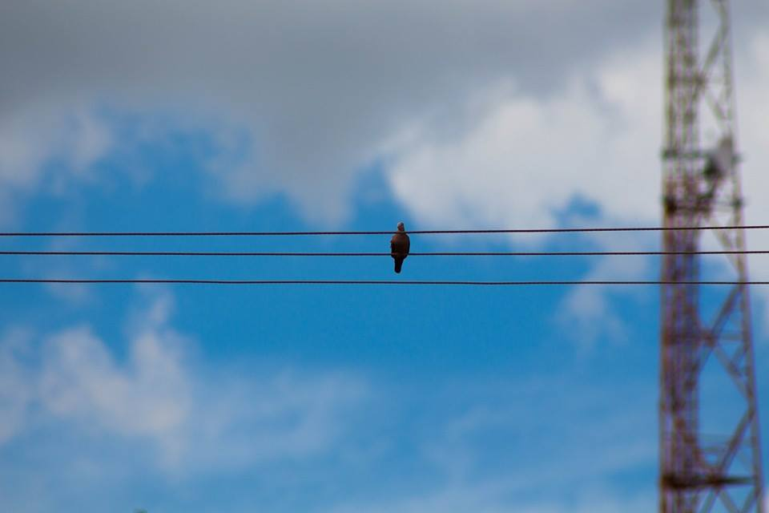
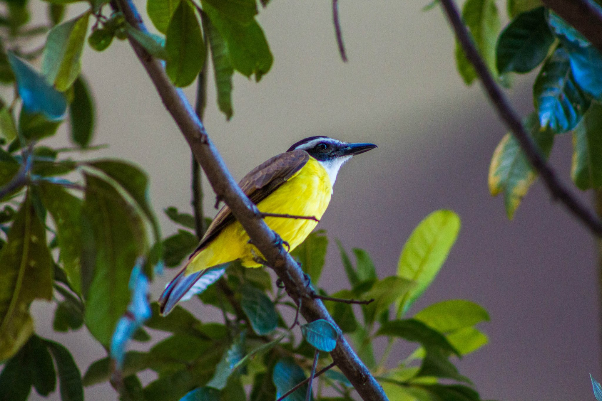
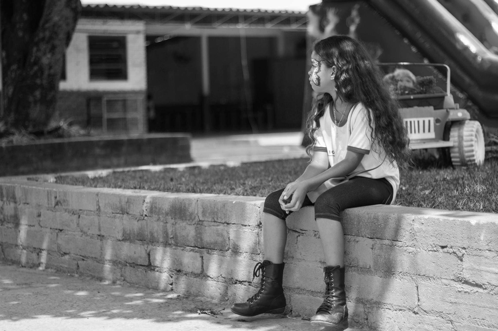
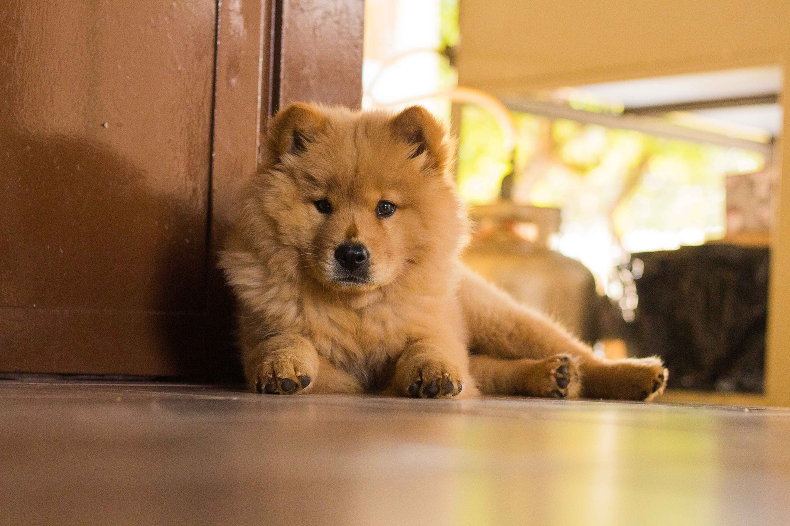
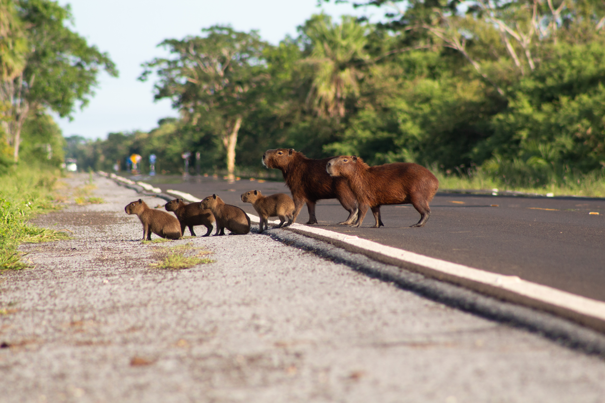
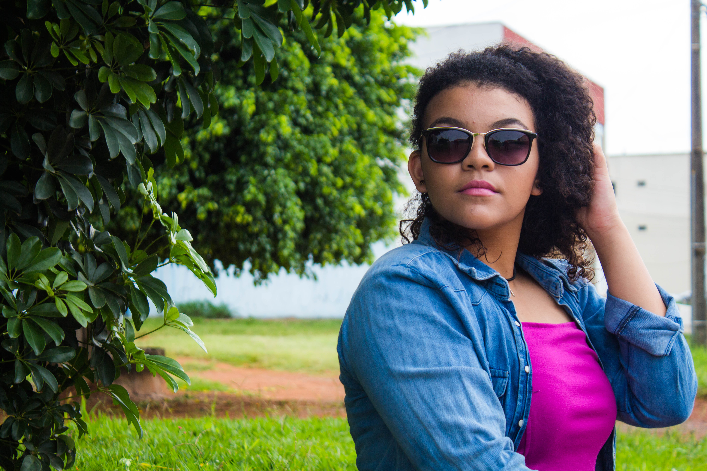